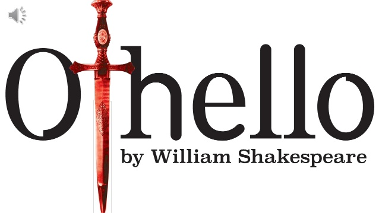

Analysis:
William Shakespeare's
the play: Main Manipulator Iago. The story revolves around four central characters. Othello, Desdemona,his beloved wife, Cassio and Iago.
In
He achieves this by getting close to all personalities and playing on their weaknesses while they refer to him as honest Iago, thus furthering his
control over the characters.
Iago's use of reverse psychology captivates other's attention and serve as a tool to ensure that he himself appears honest and unwilling to implicate
others. On the surface, he seems to have a loyal and worthy friend but his wording and tone always imply the opposite of what he says. When Othello
asks whether it was Cassio that talked with his wife, Iago appears be an honest friend who wants to see the best in others. However, in saying this,
Iago leads to Othello to do the exact reverse while expressing his apparent hope that rumour is untrue. On numerous other occasion, Iago urges Othello
to be patient and calm, but these comments only feed Othello's rage and his belief that the rumuors are true, which is precisey what Iago desires.
Iago is a character who has a role play but at the same time he is also a director who directs the actions of the characters and decides on the
development of the plot of the play. He serves his master, yet he also controls his master. He plans his actions and ensures the outcome. Yet he does
not have any visible motives. The duality that he constantly shows throughout the play, confirms the complexities of Iago's personality that he is not
only a man seeking vengeance.
Trust is a powerful thing that Iagoeasily abuses. Iago is a master of abusing people's trust to gain more power and further the completion of his goals.
Iago poisons peoples thought by creating ideasin their heads without implicating himself.
Iago compares himself to a 'Devil'. He is aware of his own evil and dismissing the natural state of morality but he chooses to be evil anyway.
Furthermore, in his scheming he takes sadistic pleasure; there are no good qualities in his nature.
When we work hard to achieve our goals, it can be difficult to watch others who are less accomplished than we are, achieve what we've wanted,
without as much work. This type of situation can cause us to feel envious and jealous of the other person. Some people might use this type of situation
to challenge themselves to reach their goal, while others might decide to destroy the person they believe stands in their way.
In Shakespeare's play
for promotion. A less experienced soldier, Cassio, is promoted to liuetenant instead of Iago. This action triggers anger in Iago,and he talks out his
anger on his master, Othello. Iago desires to destroy Othello's life and marriage even if others are harmed in the process. Iago explains that he wants
to destroy Othello because he has been passed over promotion to liuetenant; however he offers other motives for his hatred of Othello throughout the
course of the play. He mentions he believes Othello is having an affair with his wife, Emilia. He states, "it is thought abroad that 'twixt my sheets,
he has done my office"(Act-I Scene-III, lines 369-370). He also mentions having a desire for Desdemona because he wants to seek revenge on Othello,
"wife for wife"(Act-II, Scene-II, lines289). Eventually, it becomes clear that Iago has no real motives for hurting Othello and his character
appears to be avice figure, a stock character who personifies immoral behaviour by tempting others.
Conclusion
From the above discussion, we can see that Iago is a person who was able to takeover Othello with his psychological manipulation. All he mainly wanted to do
was to have back Othello for taking the promotion that he wanted. He worked his way into Othello's head and made him become a green-eyed monster. He is the
symbolic representation of what the devil stands for, destructiveness and of nothigness. The way he creates evil the destruction of the people around him
is an artist who makes his masterpiece. In conclusion, Iago creates destruction and his materials are the people around him, like an artist who makes his
work from the materials around him.